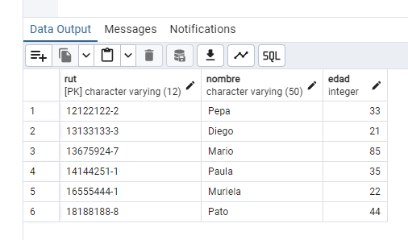
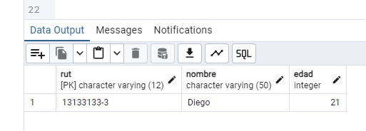
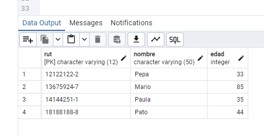
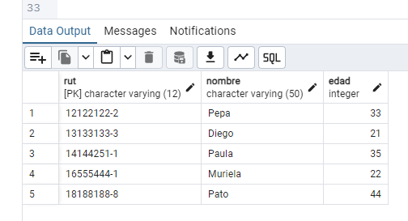
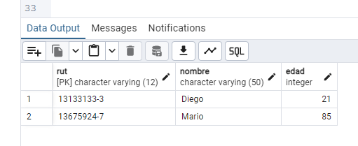
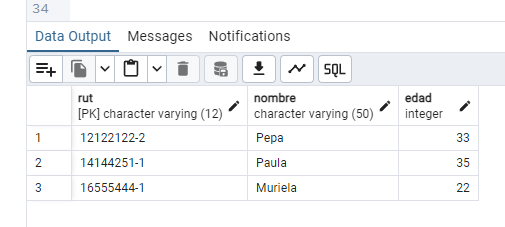
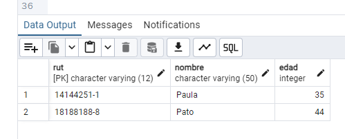
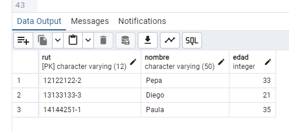
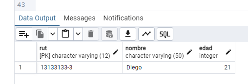

Domina el uso de PostgreSQL mediante la implementación de consultas estructuradas, manejo de llaves primarias y lógica de filtrado compleja.
CREATE DATABASE ejercicio_clientes;Se inicia el proyecto creando la Base de Datos que alojará nuestras tablas de clientes.
Aquí usamos VARCHAR(12) para el RUT (considerando puntos y guion) y definimos la
Primary Key.
CREATE TABLE clientes (
rut VARCHAR(12) PRIMARY KEY,
nombre VARCHAR(50) NOT NULL,
edad INTEGER
);Definimos la estructura de la tabla asegurando que el RUT sea único mediante el uso de una Llave Primaria.
INSERT INTO clientes (rut, nombre, edad) VALUES
('12122122-2', 'Pepa', 33),
('13133133-3', 'Diego', 21),
('13675924-7', 'Mario', 85),
('14144251-1', 'Paula', 35),
('16555444-1', 'Muriela', 22),
('18188188-8', 'Pato', 44);Insertamos los registros iniciales para poder realizar las pruebas de consulta solicitadas.

Visualización de la tabla completa desde pgAdmin.
SELECT * FROM clientes WHERE rut = '13133133-3';Búsqueda exacta utilizando la llave primaria para obtener los datos de un único cliente.

SELECT * FROM clientes WHERE edad > 25;Aplicación de operadores de comparación para filtrar registros numéricos.

SELECT * FROM clientes WHERE nombre <> 'Mario';Uso del operador de desigualdad para excluir registros específicos de los resultados.

SELECT * FROM clientes WHERE rut LIKE '13%';El operador LIKE con el comodín %
permite buscar
coincidencias parciales al inicio de una cadena.

SELECT * FROM clientes WHERE nombre LIKE '%a';Uso del comodín % al inicio de la cadena para
filtrar registros
cuyos nombres terminan con la vocal "a".

SELECT * FROM clientes WHERE nombre LIKE 'P%' AND edad > 34;Combinación de filtro por patrón de texto y operador relacional
de mayor que
mediante la conjunción AND.

SELECT * FROM clientes
WHERE rut LIKE '1%'
AND nombre NOT LIKE 'M%'
AND edad < 40;Consulta de triple condición: filtrado por inicio de cadena,
exclusión de
patrón con NOT LIKE y límite de edad inferior a 40.

SELECT * FROM clientes
WHERE (rut LIKE '13%' OR rut LIKE '%1')
AND nombre IN ('Diego', 'Mario', 'Pato', 'Pepa')
AND edad BETWEEN 20 AND 80;Combinación de operadores lógicos (AND, OR), pertenencia a conjunto (IN) y rangos (BETWEEN).
